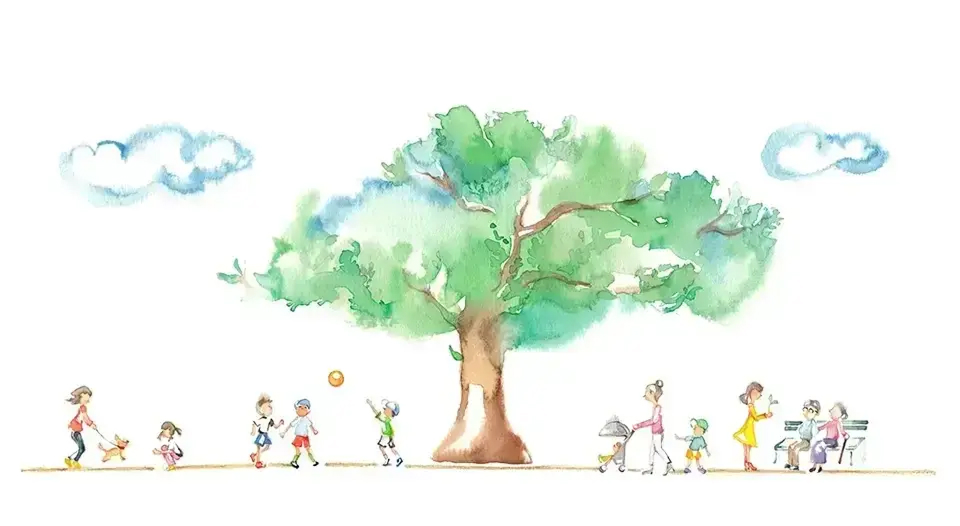
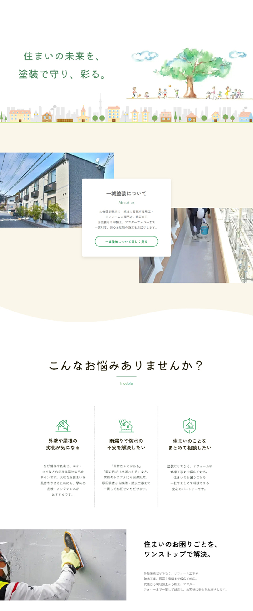
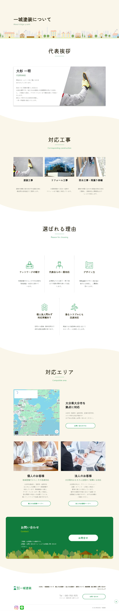
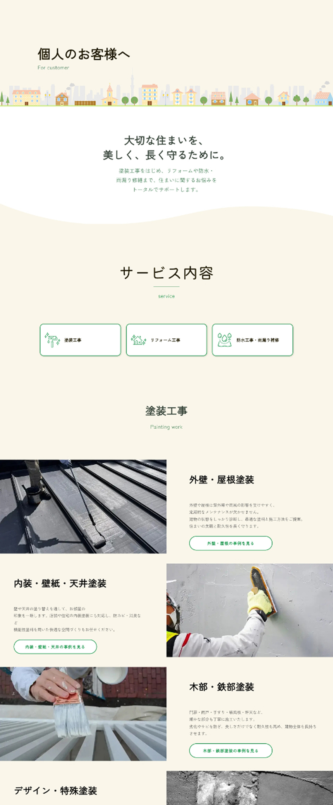
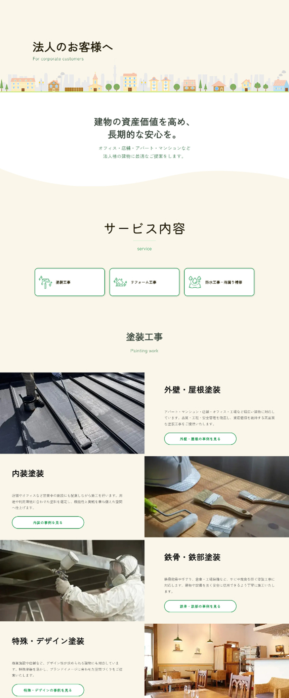

担当範囲
ワイヤーフレーム設計 / デザイン
外注様へコーディング指示
ライティング

ワイヤーフレーム設計 / デザイン
外注様へコーディング指示
ライティング
個人・法人からの新規問い合わせ増加
採用情報の強化
約1ヶ月
Figma / Photoshop
CMS（HTML / CSS / JavaScript）
大分市を拠点に、塗装工事をはじめ、リフォーム工事、防水工事・雨漏り修繕まで、住まいに関する幅広いお困りごとに対応する企業様。今回のサイト制作では、単に施工内容を紹介するだけではなく、「住まいのことなら、まず一城塗装に相談してみよう」と思っていただけるサイトを目指しました。
外壁塗装だけではなく、リフォームや防水工事まで幅広く対応する"住まいの相談窓口"としてのイメージを表現するため、柔らかなグリーンを基調に、アイボリーを組み合わせた親しみやすいカラーリングを採用しています。 また、手描き風のイラストや植物のモチーフ、ゆとりのある余白を取り入れることで、地域密着ならではの温かみや相談しやすい雰囲気を演出しました。 レイアウトは情報を整理しながらも、施工事例やサービス内容へ自然に視線が流れる構成とし、「住まいのことなら何でも相談できる」という安心感が伝わるサイトデザインに仕上げています。
COLOR
#149847#DDEB9D#FAF6E9#F8FBFFTYPOGRAPHY
Aakiwimaru
柔らかい印象のゴシック体。




塗装工事を軸にしながら、リフォーム工事、防水工事・雨漏り修繕まで幅広く対応できることを分かりやすく訴求。
大きな特徴である、お見積もりから施工、アフターフォローまで代表自ら対応する一貫体制をアピール。さらに地域密着ならではのフットワークの軽さや、急なトラブルへの対応力も伝える。
落ち着いたグリーンと明るいベージュ系を基調に、柔らかなフォント、ゆとりのある余白、イラストやあしらいを取り入れ、「気軽に住まいのことを相談できる地域の工務店」を表現。